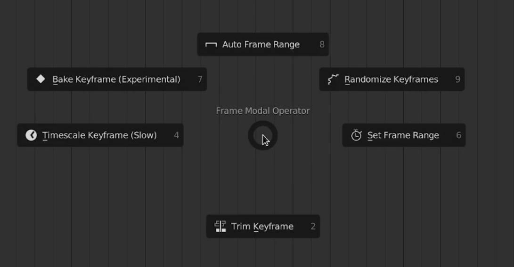
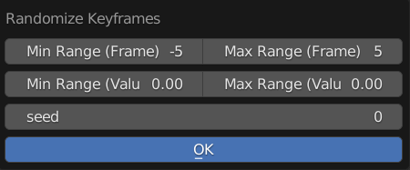
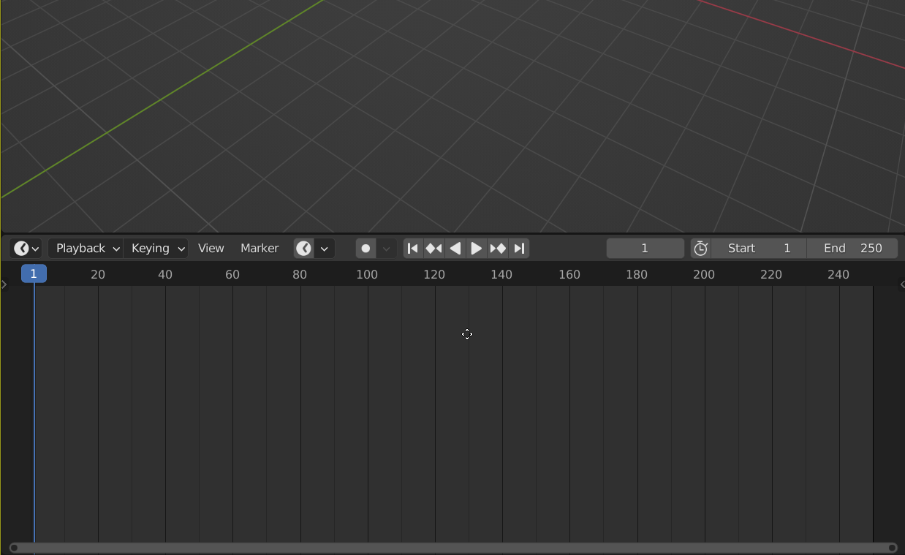
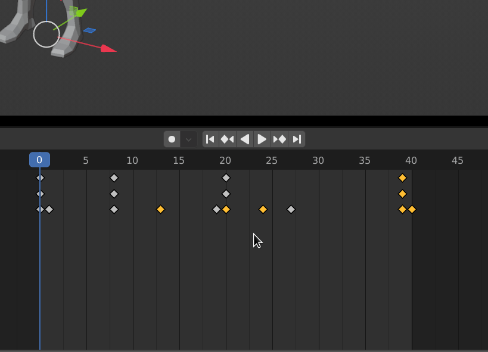
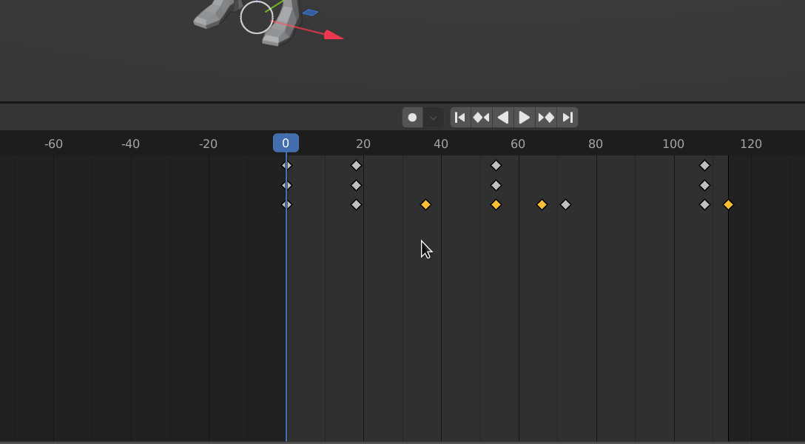
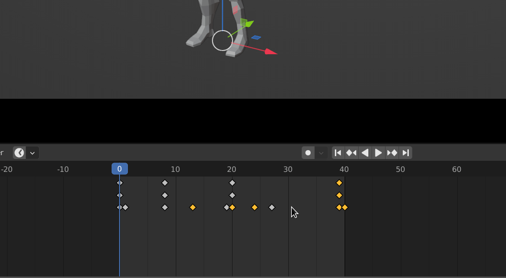

Timeline Utility Pie
A Pie Menu that provides some helpful features, the shortcut is Shift F
Toogle Auto Frame Range
Quick Access Toogle for Auto Frame Range
Randomize Keyframes
Ramdomizes Selected Keyframes
Min Range (Frame): Minimum in the Randomize Range for Frames (X Axis Or Horizontal in Graph)
Max Range (Frame): Maximum in the Randomize Range for Frames (X Axis Or Horizontal in Graph)
Min Range (Value): Minimum in the Randomize Range for Values (Y Axis Or Vertical in Graph)
Max Range (Value): Maximum in the Randomize Range for Values (Y Axis Or Vertical in Graph)
Seed: Seed For Randomization
Set Frame Range
A more interactive way of setting frame range in scene
Tab: Press Tab to Toogle Between Controlling Frame Start or Frame End
Alt: Deprecated
Trim Keyframe
An interactive way of trimming keyframes, it insert holding keyframes at the selected frame range, and delete all keyframes outside the range
Tab: Press Tab to Toogle Between Controlling Frame Start or Frame End
Alt: Deprecated
Timescale Keyframe
An interactive way of timescaling keyframes, useful for slow down or speed up animation
Tab: Press Tab to Toogle Between Controlling Frame Start or Frame End
Alt: Deprecated
Warning
This Operator Can Be Really Slow and Laggy if theres Alot of Keyframes
Bake Keyframe
A more interactive way of baking keyframes
Tab: Press Tab to Toogle Between Controlling Frame Start or Frame End
Alt: Deprecated
Warning
This Operator is Experimental and Might Contain Bugs, Please Report if you encounter any